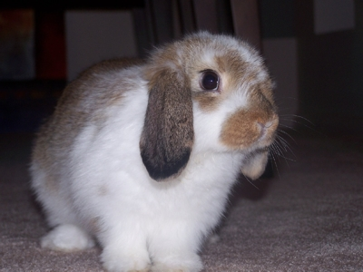

Rabbits are the most adorable animals in the world.
I used to own rabbits, until they died.
Here's my favorite song about rabbits:
Little bunny Foo Foo
Hopping through the forest
Scooping up the field mice
And bopping them on the head
Down came the Good Fairy, and she said
"Little bunny Foo Foo
I don't want to see you
Scooping up the field mice
And bopping them on the head."
Reasons that rabbits make great pets:
Most famous rabbits:
My rabbits were:
| Shelby | Brown and white |
| Rosarita | Black and white |
| Black and white | Black and white |
My favorite kind of rabbit is a dwarf lop:
You can read more about them here.